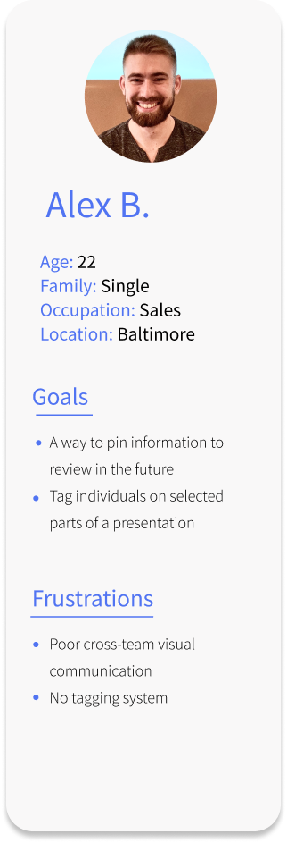
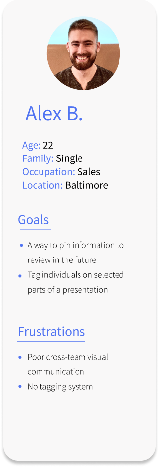
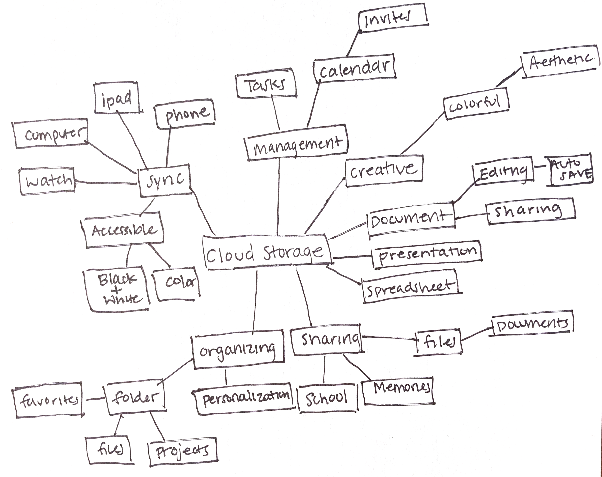
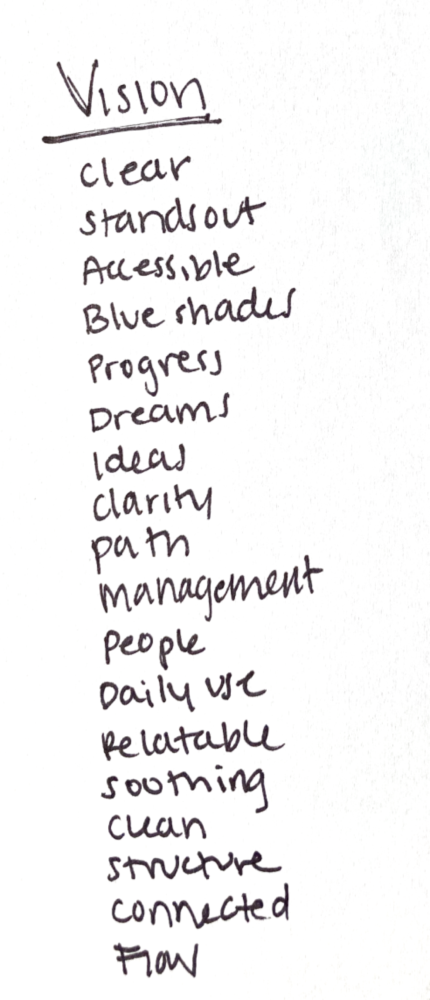
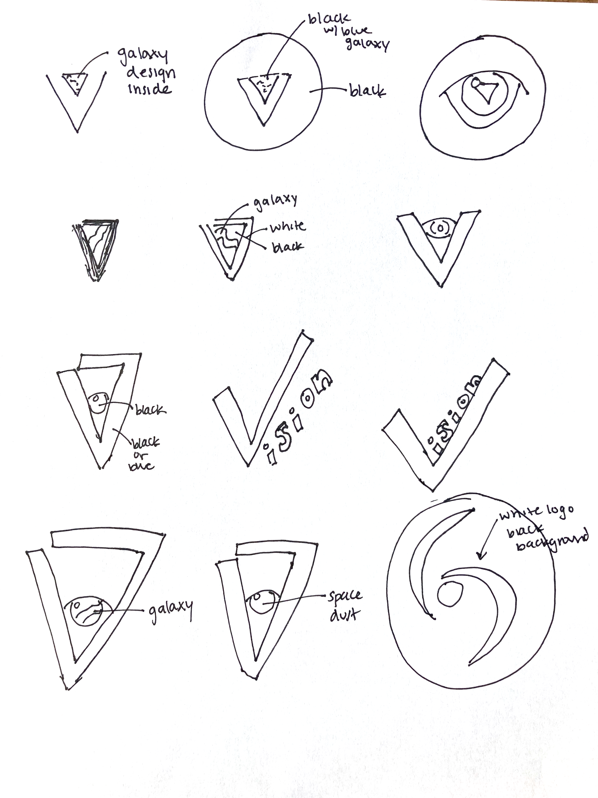

A cloud storage application with administrative features that help users create, connect, and collaborate in real time.
VIEW PROTOTYPE

Design roles
- UX Research and Design
- Branding and Identity
- Visual Design
Deliverables
- User Surveys
- User Interviews
- Competitve Analysis
- User Personas
- User Stories and Flows
- Content Strategy
- Wireframes
- Branding and Identity
- Prototyping
- A/B Testing
- Visual Design
Tools
- Pen/Paper
- Google Suite
- Figma
- Adobe Illustrator
- Usability Hub
The Problem:
Users were frustrated with juggling multiple apps to manage their day and collaborate with others on projects.
The Solution:
I created a cloud storage application with administrative features that allows users to save, organize, create, and upload content, while connecting and collaborating in real-time.
Research + Discovery
User Research
I conducted a user survey to better understand how and why users use cloud storage. I knew that users liked that they could quickly share content with others, but I wanted to know if they had a process for brainstorming, such as using
mood or vision boards.

What people use their cloud storage for most

51% percent of of participants might use a cloud storage app to create a vision, 18.9% said they would use it.
VIEW SURVEY
Competitve Analysis
After learning about the most popular cloud storage applications used by my survey participants, I decided to investigate the key differences between Google Drive, Dropbox and iCloud by conducting a SWOT Analysis. I wanted to learn
where their strengths are and where they fall short in order to best determine the most important features and how we could enter the market. Some of the strengths were excellent integration and the opportunity to create content within,
while a weakness was lack of ability to support tagging. While Google Drive and Dropbox do not support tagging, this creates an opportunity for a competitor to enter the market, which will allow users to connect and collaborate quicker.
VIEW COMPETITIVE ANALYSIS
User Personas
Based on the user survey data, interviews, and Competitive Analysis, I created three personas - A Student, a Researcher, and a Salesman
 
VIEW USER PERSONAS

VIEW USER PERSONAS
Branding + Identity
Research and Sketching
In order to decide on a brand name, I created a mind map based on our user personas and words that arose when talking about cloud storage.


Our product helps turn dreams and ideas into a reality by having everything you need in one place. From our mind mapping experience, I decided on the brand name: Vision, and created a list of words that come to mind when thinking
about vision.
Vision incorporates our product's mission of aligning with your vision or goal, with the added opportunity to create vision boards. I knew I wanted the V in Vision to be part of the logo and for users to feel a sense of clarity and
a clear path to reach their destination.

Refining
After sketching out logos, I knew that the logo was to remain simple in order to convey a clean feel. I brought my favorite designs into Figma and began exploring the concepts until I reached my final design.
Style Guide
Logos


Color Palette
Typeface
- H1 - Muli Bold 36 pts
- Muli ExtraLight 36 pts in template
- H2 - Muli Semibold 24 pts
- H3 - Muli Semibold 16 pts
- H5 - Roboto Regular 14 pts
- Body - Muli Regular 14 pts
- Pop-ups - Montserrat ExtraLight 24 pts
- Montserrat Regular 24 pts when filled in
- Buttons - Roboto Black 15 pts
- Document Tile - Montserrat Medium 12 pts
VIEW STYLE GUIDE
Visual Design
Hi-Fidelity Prototype
With the style guide created, I built out the first high fidelity desktop and mobile prototype and conducted preference tests to ensure positive design decisions. It was important to make sure that both mobile and desktop designs
remained cohesive.


From the preference test for the Quick Access and Drive layouts, I learned that half the users chose the horizontal swiping to view each section over clicking the carrot to change, and then vertical scrolling. From this I decided to
try a new approach that allowed users to easily change without excessive scrolling.
My User testing results were that both my desktop and mobile were easy to navigate. Creating a Create icon was beneficial to a simpler flow. Moving, sharing, and starring was streamlined across both mobile and desktop. The goal was to
keep things as uniform as possible across both devices.
Final Outcome
I created boxes for each section and used the light blue only for an upcoming event for the day and the document tiles. I changed the name of the original Calendar to Agenda, and created a separate section for a calendar so that users
could view both their agenda and monthly calendar on their homepage. The Agenda went back to a vertical scroll which the tick would move in real-time. The side navigation bar is collapsible, and it is on every page throughout the
prototype. Instead of having an upload button, there is a create icon where a pop out occurs with the options to create a document, spreadsheet, presentation, vision board, upload, and folder.


Conclusion + Takeaways
After completing this project, I’ve gained a lot of insight into what worked and what didn’t. I learned that paper prototypes are a great way to quickly test an idea before building out a lo-fi version. Keeping all your sketches,
hand-drawn prototypes organized and together is extremely helpful when looking back and creating a case study. If I were to change something about the way I went about this project, it would be to constantly look back at the user
stories and user personas in order to stay within scope. I found myself getting excited about the additional features that I wanted to add onto the app that essentially I completely built out both a mobile app and desktop app and in the
end had to trim back some frames (I saved them though, just in case!) UsabilityHub turned out to be an excellent tool for quick A/B testing, which ended up being very helpful in my design decisions.